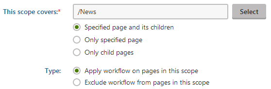
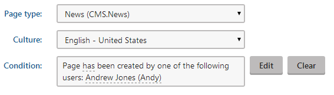

Applying workflows to pages
There are two ways in which you can apply a workflow on pages on your site:
Directly applying a workflow on a page - use this option if you want to apply a workflow on a page, or a page and its children, directly from the Pages application. Applying a workflow directly also creates a workflow scope.
Creating a workflow scope - use this option if you want to have more control when applying a workflow on the pages on your site. You can exclude pages from a workflow and control to which page types and cultures the scope applies. You can also create special conditions for each scope.
Applying workflows on pages in the Pages application
This functionality is useful when you want to apply a workflow on a page, or a page and its children, directly from the Pages application. For example, when you create a page outside of an existing workflow scope.
Users need to have the Manage workflow permission assigned in the content module to be able to use this functionality.
In the Pages application, navigate to the page that you want to apply a workflow on.
Click Apply workflow. A dialog box opens.
Select the workflow that you want to apply on the page.
Choose from the following options:
To this page only
To this page and its children
Click Save & Close.
Applying a workflow on a page directly also creates a workflow scope that can be edited later.
Defining workflow scopes
A workflow scope defines the conditions based on which a workflow will be applied to pages. When creating a workflow scope, you have to specify a page's path and whether you want to include child pages under this path. Then you can narrow down the set of covered pages by specifying some of the following parameters:
page type
culture
macro condition
The system offers two types of scopes - allowed and excluded. This way you can apply a workflow on a large section of a site and then exclude sections, which you don't want the workflow to be applied on.
Workflow priority
If a page matches scopes of multiple workflows, the workflow with the most specific parameters is applied on the page. Scopes are applied with the following priorities, from highest to lowest:
Scope with specified page type and culture
Scope with specified page type
Scope with specified culture
Scope without specified page type and culture.
Scope with the longest path.
Scope that covers only the specified page without children.
Scope that has its type set to Excluded.
Scope with specified macro condition.
Workflow priority examples
The following table presents the most common scenarios, where scopes from two different workflows (Scope 1 and Scope 2 columns in the table) conflict with each other. The Result column explains which scope takes priority.
|
Scope 1 setup |
Scope 2 setup |
Result |
|
This scope covers: /News |
This scope covers: /News Page type: Press releases |
Press releases under the News page will use Scope 2, the News page itself and its other children will use Scope 1. |
|
This scope covers: /Products |
This scope covers: /Products/Smartphones |
All pages under the Products page will use Scope 1, except for the Smartphones page and its child pages, which will use Scope 2. |
|
This scope covers: /Products |
This scope covers: /Products/Smartphones Only specified page |
All pages under the Products page will use Scope 1, except for the Smartphones page, which will use Scope 2. However, children under the Smartphones page will use Scope 1. |
Creating a workflow scope
Before creating a workflow scope, you need to create a workflow first.
In the Workflows application, edit an existing workflow.
Select the Scope tab.
Choose a site you want the scope to be effective on using the Site drop-down list.
Click New workflow scope.
Define the part of the content tree that you want to be covered by the scope. Click Select next to the This scope covers property.
In the dialog that opens, choose the page you want covered by the scope.
Specify whether you want to cover the page and its child pages, only the page or only its children.
Select if you want the scope to be allowed or excluded. Keep the following behavior in mind when working with exclusions:
Working with exclusions
Exclude workflow from pages in this option applies only to the workflow under which it has been specified and does not override scopes in different workflows.
For example, under Workflow 1, you have "/Products" and its children allowed and "/Products/Smartphones" excluded. Under Workflow 2, however, you have "/Products" and its children allowed and no exclusion specified. The exclusion specified under Workflow 1 will have no effect on the scope of Workflow 2.

Creating a workflow scopeClick Save.
Tip
If you want the scope to cover the whole site, or you want to specify only the parameters in the Advanced section, enter "/" (i.e. the path of the root page) in the field next to the This scope covers property. Make sure that the scope covers the specified page including its children.
Advanced options
You can use these options to further refine the workflow scope. Keep in mind that the steps within the Advanced sections are optional.
Choose a page type. The workflow will be applied only on pages of this type.
Make sure the desired page type is assigned to the site you have selected.
If you had to assign the page type to the site, click Save to refresh the page and load the newly assigned page type.
Select the page type from the Page type drop-down list.
Specify a culture. The workflow will be applied only on pages in this culture.
Make sure the culture is assigned to the site you have selected.
If you had to assign the culture to the site, click Save to refresh the page and load the newly assigned culture.
Select the culture from the Culture drop-down list.
Enter a macro condition. If the condition is met when starting a workflow cycle on a page within the scope, the workflow will be applied to the page.

Specifying advanced properties of a workflow scopeSave the workflow scope.
If you want to apply the workflow to an existing page within the scope, make changes to the page.
If you're using basic workflow, navigate to the page in the Pages application and click Save.
If you're using advanced workflow, navigate to the page in the Pages application and click New version.